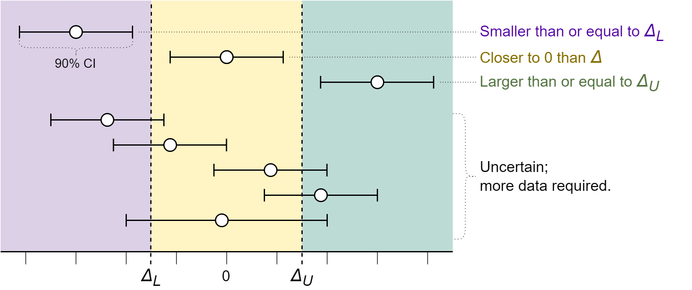

Four one-sided test of significance (FOST). Dear reader, does this make sense?
By Peder M. Isager
May 24, 2024
In traditional Neyman-Pearson null-hypothesis significance testing (NHST) the null-hypothesis (\(H_{0}\)) of no effect is tested, and it is rejected if the test is significant at a certain alpha level (usually 5%). A problem with NHST is that we can only ever reject H0; never accept it. The reason is that non-significant results are always ambiguous. They can either signal a true but imprecisely measured effect or a precisely measured null-effect. NHST makes no distinction between these cases.
This limitation of NHST has led to several problems for researchers. Most problematically, researchers commonly misinterpret non-significant significant results as evidence for no effect (Greenland et al. 2016). Another problem is that researchers have no decision rules for when to stop collecting data if the effect actually is zero, or when it is trivially small. This can potentially lead to research waste if data collection is continued long after a precise estimate of a null-effect is obtained.
A remedy to this limitation of NHST is the frequentist two one-sided-test of equivalence (TOST). The TOST procedure allows researchers to test whether an effect is smaller than a predefined smallest effect size of interest (SESOI; see figure 1A). In other words, TOST allows us to test if the effect is equivalent to an effect that is - if not exactly zero - at least too small to care about for practical purposes (see Lakens, Scheel, and Isager 2018 for an introduction to TOST). This gives researchers a method to distinguish between imprecise estimates and precise estimates of trivially small effects, which reduces misinterpretations of NHST results. It also gives researchers a decision rule for when to stop data collection and abandon a research line if the effect is smaller than SESOI. Amazing!
However, TOST equivalence testing also has a problem, which mirrors that of NHST. In TOST, it is not possible to accept the hypothesis that the effect is large enough to care about (larger than SESOI). Put differently, a TOST does not distinguish between highly uncertain results and results that for sure are larger than SESOI. Even if you combined NHST with TOST, you could never formally conclude that the effect is large enough to be practically important, because neither NHST nor TOST tests that hypothesis.
If you want to test if an effect is larger than SESOI, you need to conduct either a superiority test (to test if the effect is at least as large as the upper equivalence bound; see figure 1B) or an inferiority test (to test if the effect is at least as low as the lower equivalence bound; see figure 1C).
In practice, I often find myself wanting to run all the tests mentioned above. That is, I want to decide whether the effect I have observed is smaller than OR larger than OR equivalent to SESOI. Let me give an example to illustrate when such a decision is needed. Suppose I do research for a pharmaceutical company. I am testing how well a novel drug treatment works compared to existing drugs. I have defined a SESOI such that drug effects less extreme than SESOI can be considered practically equivalent to existing drug effects. If the true drug effect is at least as large as SESOI in the negative direction it means the new drug is less effective than existing drugs, and the company should cancel production of it. If the true drug effect is within the SESOI bounds then the new drug effect is equivalent to existing drugs, which means that the company should consider the cost-benefit ratio of production and start production if the new drug is cheaper than existing treatments. If the true drug effect is at least as large as SESOI in the positive direction then the new drug works better than existing drugs, which means the company should go ahead with production. If my findings are inconclusive, the company should get me to collect more data before they make a final decision.
In the above example we want to simultaneously test three different hypotheses, each of which will lead to a different decision if accepted:
- effect ≤ lower SESOI (inferiority; cancel production)
- lower SESOI ≤ effect ≤ upper SESOI (equivalence; assess cost/benefit ratio)
- upper SESOI ≤ effect (superiority; start production)
As mentioned, these hypotheses could be tested separately using a one-sided test against the lower SESOI bound, an equivalence test, or a one-sided superiority test against the upper SESOI bound (see figure 1A-C). But could we test all three hypotheses at once, using a single test procedure? I believe we can, by combining all three tests into one four-one-sided test of significance (FOST). Here is how it would work.
First, specify a meaningful smallest effect size of interest. Then, in the statistical software of your choice, run all four of the one-sided tests that make up the inferiority-, superiority- and equivalence test specified in figure 1A-C. Each test should be one-sided, and no corrections for multiple comparisons should be made, even though we are running three tests. This is because each test has a completely non-overlapping \(H_{1}\) region, which means no two tests can be significant simultaneously, so there is no risk of inflated error rates.
Running these three tests will yield three test results, which should be interpreted as follows (see figure 2 for examples):
- If the inferiority test is significant, treat the effect as inferior to \(\Delta_{L}\).
- If the superiority test is significant, treat the effect as superior to \(\Delta_{U}\).
- If both two one-sided tests for equivalence are significant, treat the effect as closer to 0 than \(\pm \Delta\).
- In all other cases, remain uncertain and do not make any conclusion about the size of the effect.
 For any FOST, the true effect is either in the zone of equivalence, the zone of inferiority, or in the zone of superiority, so only one type 1 error can be made (we erroneously conclude that the effect is either in the zone of inferiority, or equivalence, or superiority, when it is not). This means that the total probability of a type 1 error over all tests equals the type 1 error rate of the test that ends up significant (and only one test can be significant for any single FOST). If all tests have alpha set to 5%, the overall type 1 error rate should therefore be 5%.
I think the FOST procedure makes sense. I can’t see any obvious problems with it. However, as much sense as I think it makes, I can’t help but feel nervous about squashing three frequentist hypothesis tests together without any corrections for multiple comparisons. I am also not a trained statistician, and my math skills are nothing to write home about, so I don’t fully trust my ability to evaluate the validity of this procedure. This is where you come in! I would love to get a second (and third, and fourth…) pair of eyes on this proposal, just in case there is a big old conceptual flaw I have overlooked. Do you think the procedure makes sense? Am I correct that no multiple comparison corrections are needed? Is there a problem with this approach I have overlooked? Please leave me a comment below, or DM me on Twitter, and let me know what you think!
- Posted on:
- May 24, 2024
- Length:
- 7 minute read, 1353 words
- See Also: